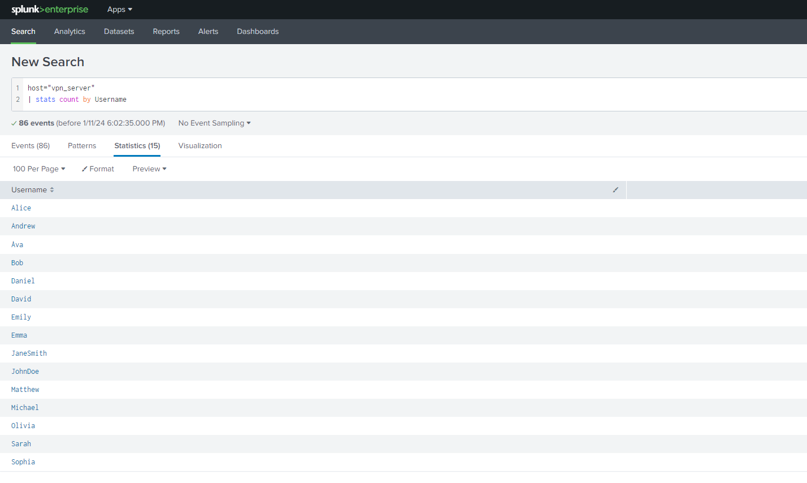
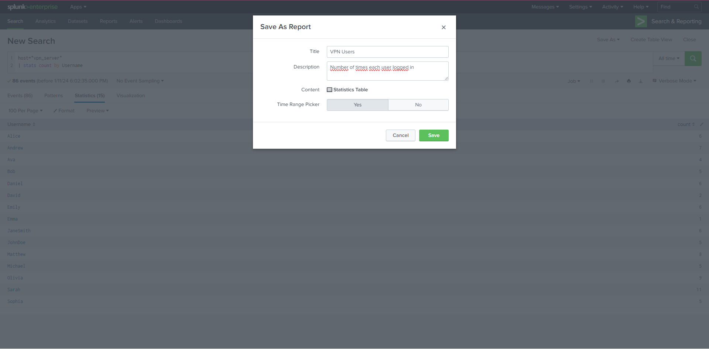
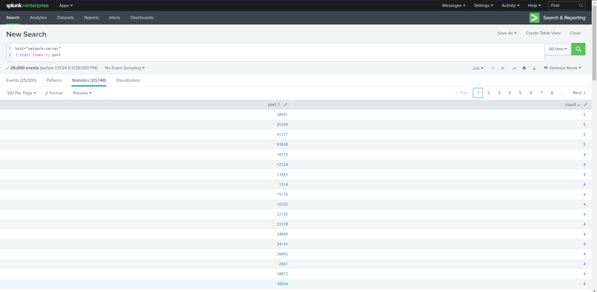
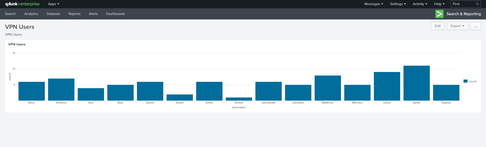
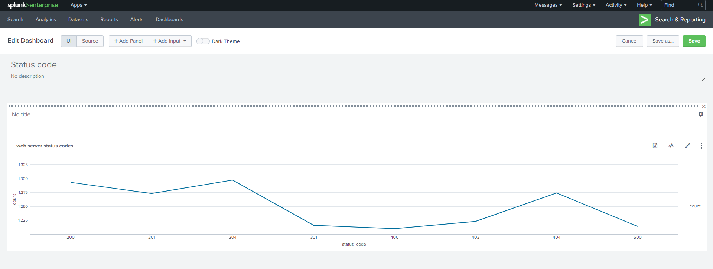

TryHackme pokój: Splunk: Dashboards and Reports
2024-01-11
Pokój który robiłem: https://tryhackme.com/room/splunkdashboardsandreports
Na samym początku poznałem proste polecenie które wypisało Username oraz liczbę wystąpienia tego użytkownika i poznałem jak zapisać takie dane jako Report co przyda się w późniejszych rzeczach
 Pierwszym moim zadaniem na podstawię poprzedniego przykładu było wypisać liczbę portów występujących u hosta network-server a dokładniej odpowiedzią do zadania była największa liczba wystąpień tego samego portu co w moim przypadku była równa 5
"Kolejną ciekawą rzeczą, którą się dowiedziałem i która przypadła mi do gustu w Splunku, było przekształcanie danych w czytelne statystyki graficzne. Zauważyłem, jak błyskawicznie można przedstawić informacje w formie wykresów i grafik, co sprawia, że są one zrozumiałe dla każdego.
Tak jak poprzednio było analogiczne zadanie w którym trzeba było wypisać i przedstawić w formie graficznej liczbę wystąpień danego statusu strony interentowej, tu akurat przedstwiłem w formie wykresu liniowego.
Następne zadanie było równie ciekawe a mianowicie tworzenie alertów. Przykładowo, mogą one wysyłać e-mail do administratora, gdy Splunk wykryje zbyt dużą liczbę prób logowania do konta, co może wskazywać na atak brute force. Niestety, na TryHackMe Splunk był w podstawowej wersji, co oznaczało brak opcji tworzenia alertów. Dlatego tę wiedzę musiałem przyswoić tylko teoretycznie.